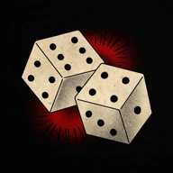
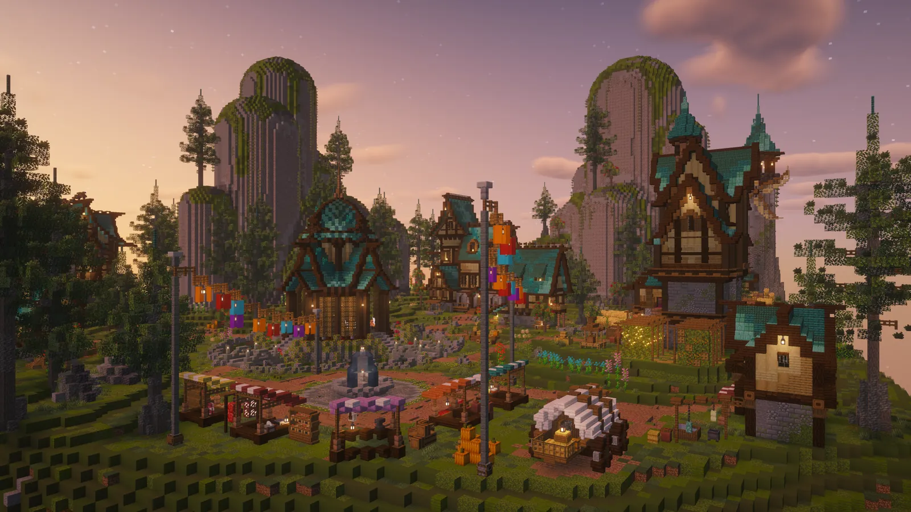

Vanilla+ Survival
Classic Minecraft survival with thoughtful quality-of-life additions.

DiceSMPA simple Vanilla+ Minecraft survival server built to keep Minecraft feeling like Minecraft.
DiceSMP keeps the classic survival loop at the heart of the experience. Explore, build, team up, and make the world your own with quality-of-life additions that stay out of your way.
Get to know the server“57 plugins behind the scenes,
but Minecraft still feels like Minecraft.”
Everything you need for a great survival world, nothing that gets in the way.
Classic Minecraft survival with thoughtful quality-of-life additions.
Play together across Java and Bedrock Edition.
Protect your land, team up, and build a place that feels like yours.
No virtual coins. Diamonds stay at the heart of player trading—and the diamond bank.
Mine, vote, and fight your way from Coal to Netherite. Check the rankup menu for your next milestone.
Deposit diamonds with /bank and keep them out of your inventory until you need them.
Chat with nearby Java players while exploring or working on a build.
Fresh cosmetics, custom items, shops, and useful tools—with more on the way.
Organized 5v5 team battles with kits, spectator mode, and no friendly fire.
Visit /warp afk and earn three reward rolls every 30 seconds—iron or claim blocks.
Protected by Vulcan · Plus 4 land claims, 3 player warps, random teleport, death chests, vote crates, and more.
Find a quiet corner to build or set out and see where the path takes you. Claim your Overworld home, then explore the open Nether and End.
Find your way inRandom teleports can land up to 30,000 blocks from spawn.
Land claims are disabled in the Nether.
Land claims are disabled in the End.
Our own custom plugin brings playful touches and useful updates to the world.
A bit of color for your next adventure. Pick a balloon and bring it along.
Scheduled restarts help keep the server running smoothly, with a visible boss-bar countdown so players always know when the next restart is coming.
Feeling lucky? Challenge someone to a casual flip using diamonds.
Deposit, withdraw, and check your diamonds with /bank—no chest room required.
Five-player teams, kit votes, spectator mode, and structured matches.
Catch up on server changes in Minecraft, with a custom screen or dialog on newer versions—no need to check Discord or the website for every update.

Friends on Java and Bedrock can share the same DiceSMP world. Join from the edition you already love and get building.
No mods and no extra launcher. Pick your edition and jump into the same shared world.
FIRST JOIN Java players sign in through nLogin's in-game dialog: create a password on first join, then enter it when you return. No commands needed. Bedrock players are signed in automatically through Floodgate.
New here? The DiceSMP field guide covers commands, claims, ranks, trading, and rules.
Catch the community in action and come say hi.
Join the DiceSMP community, keep up with server updates, meet other players, and find people to play with.
Voting helps new players discover DiceSMP. Thanks for supporting our little corner of Minecraft.
Every vote helps more players find DiceSMP—and earns you 1 vote point plus 1 Vote Crate key. Spend points at /voteshop.
Server softwarePurpur 1.21.11
CrossplayGeyser + Floodgate
Plugins57 plugins
EconomyDiamonds, player trading, and /bank
ProgressionCoal → Netherite ranks
MiniMOTD · nightcore · REDACTED_01 · REDACTED_02 · SkBee · AngelChest · AxAFKZone · AxInventoryRestore · AxiomPaper · BetterTeams · ChatGames · ChestSort · Chunky · Citizens · Clumps · CoreProtect · REDACTED_03 · DiceCustomPlugin · DiscordSRV · Essentials · EssentialsChat · EssentialsGeoIP · EssentialsSpawn · ExcellentCrates · REDACTED_04 · floodgate · Geyser-Spigot · GriefPrevention · InteractiveChat · InteractiveChatDiscordSrvAddon · ItemsAdder · LagFixer · REDACTED_05 · Multiverse-Core · REDACTED_06 · REDACTED_07 · nLogin · REDACTED_08 · PinataParty · PlaceholderAPI · pwarps · Shopkeepers · Simple_RTP · SkinsRestorer · Skript · skript-gui · skript-worldguard · TAB · Vault · ViaBackwards · ViaVersion · voicechat · VoidGen · Votifier · VotingPlugin · REDACTED_09 · REDACTED_10